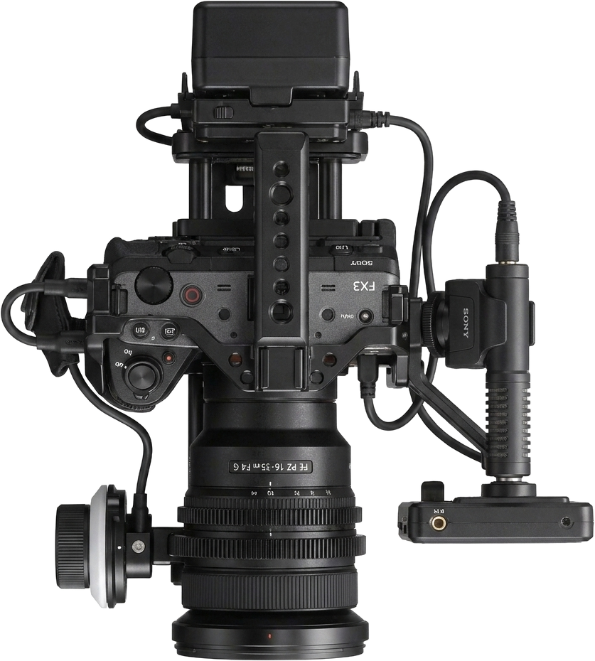
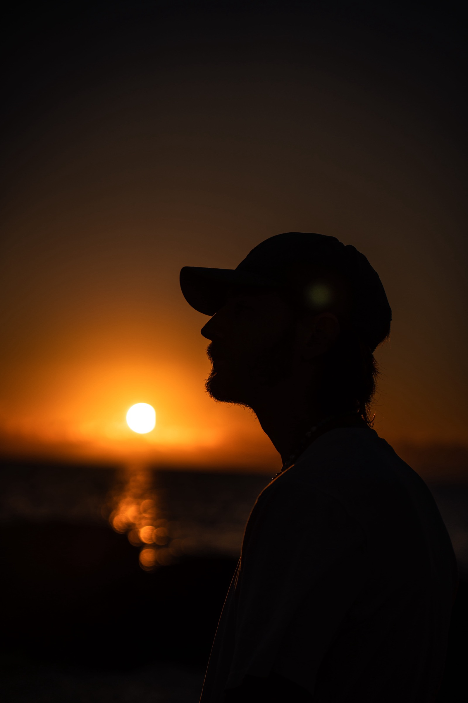

לוטםLottem · Short documentary · 3 min
A short documentary I wrote, directed and cut.
DirectorScriptEditor

Filmmaker, videographer and colourist based in Tel Aviv, studying at the Sam Spiegel Film & Television School in Jerusalem. Five short films behind the camera, in the edit and on the grade; brand films and music work for clients across the country; and stills from the road.

I'm Chen Kessler — a filmmaker, videographer and colourist based in Tel Aviv, studying at the Sam Spiegel Film & Television School in Jerusalem. I work across the whole chain: camera, edit, colour and sound design on short films, and concept-to-delivery on brand and music work.
A short documentary I wrote, directed and cut.
A ten-minute short. I ran the camera, graded the film and built its sound.
Final cut with subtitles. Six minutes, one thread, nowhere to hide a weak frame.
Seven minutes graded in DaVinci Resolve — building the film's contrast and palette out of the raw material.
Cut, graded and sound-designed end to end.
Short exercises, one idea each — a movement, an edit, a look.
Track coverage cut into a short championship piece.
Built for the feed — a chef at the pass, and a jewellery brand on location.
A full brand film made end to end — concept, shoot, edit and grade.
Campaign stills — streetwear shot on the street, in the light it was made for.
A full performance shot and cut for the stage — plus stills from the live shows.
Shot, cut and graded to sit with the record.
A song teaser cut wide and vertical from the same shoot.
Faces, window light, and as little setup as the frame allows.
Eight months across Asia with a camera and no brief — drone films over the Mongolian steppe, and the stills that keep the commercial eye honest.